Barokken
Veke 6
09 februar, 2022
Informasjon
- Google Classroom
- Nettside: hsherl.github.io/norsk.
- Epost: h.sherling@wlc.ac.uk.
Tilbakemelding
Kreativ tekst
Porten til oss sjølv
Renessansemennesket
Neste prøve
Korleis skal vi gjere det med neste prøve?
Barokken (1500-1700)
Tidslinje
- Middelalderen (hele Europa): 500-1500
- Renessansen (Italia, Tyskland, Frankrike): 1350-1500
- Barokken (hele Europa): 1595-1700 (1600-tallet!)
- Tidligbarokken: hvem vet…
- Høybarokken: 1630-1665
- Senbarokken: 1665-1730
- Opplysningtiden (hele Europa):
Stikkord
- Følelser, kontraster, flyktig
- Carpe diem
- Memento mori (hovudskallemotiv)
- Jammerdalisme
Språk/stil
Jeg må også avbryte, og ta avskjed, og ønsker av mitt innerste hjertes recess og grunn min høytærede og høytestimerte madam en snar og hastig oppkomst, restitusjon og forbedring, i like måte, at den kjære livsfrukt, som himlens godhet har velsignet henne med, den lille deilige første plante, som er satt i hennes urtegård, må oppvokse og framspire de kjære foreldre til glede, contentement og fornøyelse (Holberg 1700, Barselstuen)
Litteratur
Dikting
- Leilighetsdikting (nn: høvesdikting)
- Topografisk dikting
Dorothe Engelbretsdatter (1634–1716)
Petter Dass (1647-1707)
Gud er Gud, om alle Land Laa øde / Gud er Gud om alle Mand Var døde […].
Oppsummering
- Stilretningen oppstod i Italia på slutten av 1500–tallet
- Spredte seg raskt over hele Europa
- 1600–tallet: voldsomme politiske, religiøse og økonomiskes omveltninger
- Mange kriger herjet
- Folk fryktet av livet var et spill, at tilværelsen var tømt for mening
- Døden ble et yndet motiv i kunsten
- Frykten for at døden var uten innhold, gjorde at de klamret seg til Gud
- Reaksjon mot renessansen
Kunst
Renessansen: David
Barokken: Tereas ekstase
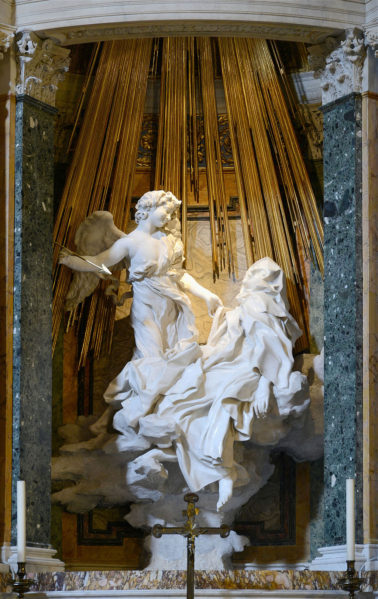
Barokken: Teresas ekstase

Caravaggio: renessansen eller barokken?

Altså…
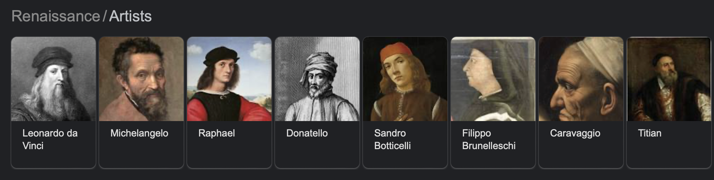 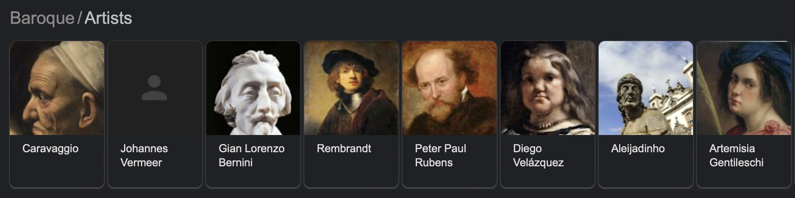
Mote
Renessansen
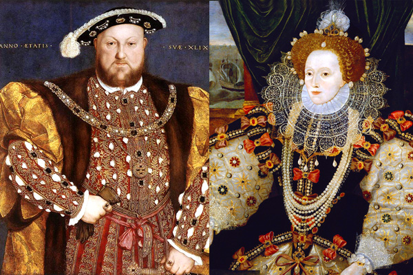
Barokken
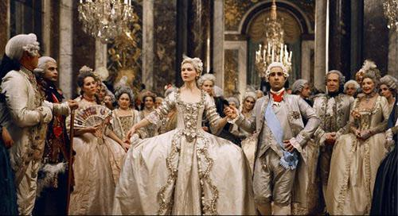
Louis XIV (14)

Louis XIV (14)
Aritektur
St Peter’s Baldachin
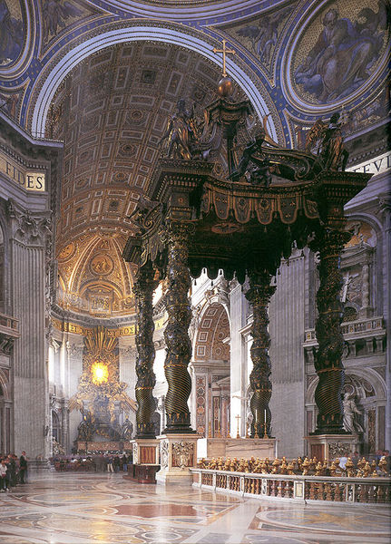
Fresco
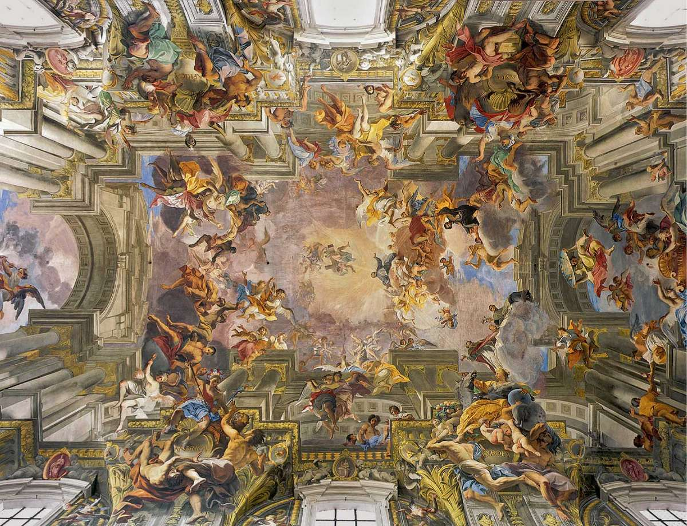
Versaille
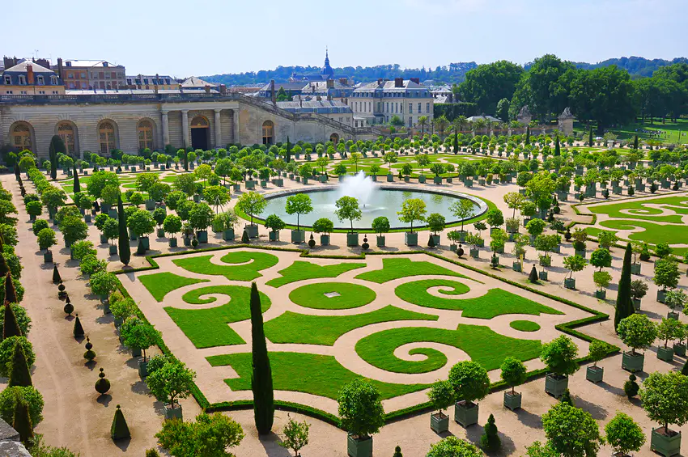
Versaille
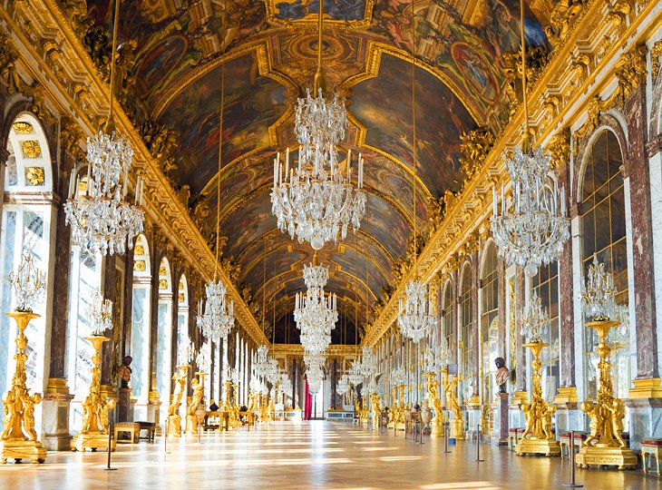
Versaille
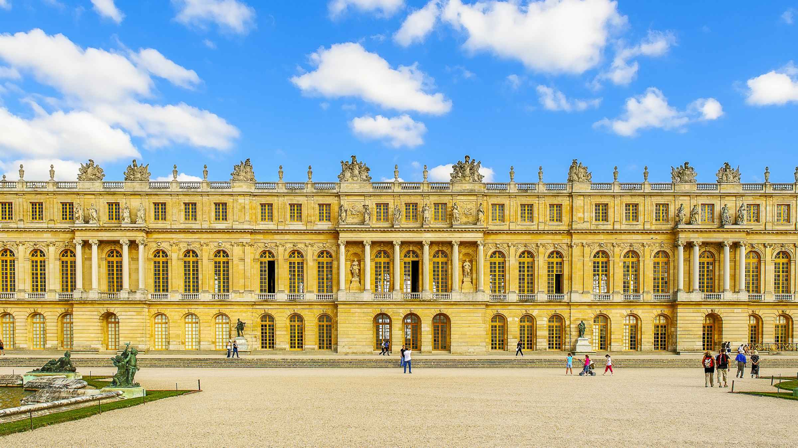
Musikk
Bach
Vivaldi
Opera
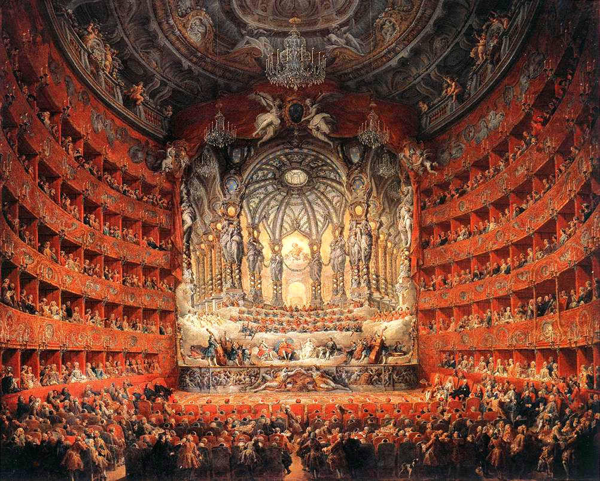
Oppsummering av stiltrekk
Pomp, prakt, snirklete, overdådig, større er bedre, kirken og Gud er tilbake i sentrum, følelser over fornuft, illusjon over virkelighet.